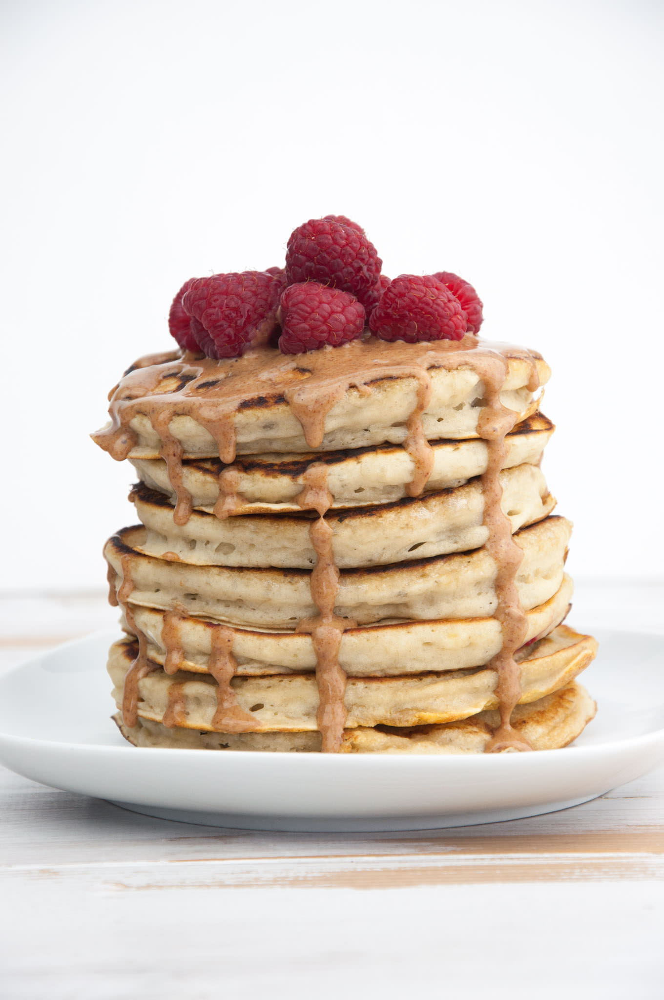

Vegan Pancakes Recipe
Description
All of my recipes come from a special place in my heart, but these especially
are one of my favorite recipes to date. For starters, they're vegan. So say
goodbye to dairy issues. Second, they're absolutely delicious.
They only take 10 minutes to make and create thick but slightly gooey pancakes.
I'd reccomend using as ripe of bananas as you can and serving these with some
nut butter and maple syrup. If you're not a fan of bananas, then I'd suggest finding
another recipe. Regardless, I gurantee the whole family or your tummy will want more!
Makes 3 medium pancakes
Ingredients
- 3/4 cup Rolled Oats
- 1 tsp baking powder
- 1 tsp vanilla extract
- 1/2 tsp salt
- 1 small-to-medium ripe banana
- 1 tsp ground cinnamon
- 1/2 cup almond-milk
Steps
- Add the oats to a high spped blender. Blend on high
until a flour-like consistency forms.
- Add in the baking powder, cinnamon, and salt. Mix for 10 seconds.
- Add in the unpeeled banana as chunks, almond milk, and vanilla extract.
- Mix the batter on medium speed until all chunks are gone. You may
need to wipe down the sides of the blender periodically.
- Transfer the batter to a bowl and let sit for 5 minutes to thicken.
- Meanwhile, heat a cast-iron skillet up at high heat for 4 minutes. Then
turn heat down to low-to-medium heat.
- Spray pan with a thin layer of oil and add ~1/4 cup of batter.
- Let pancake sit for 2 minutes and then flip and let cook for another 2 minutes.
- Enjoy with any nut butter, maple syrup, and/ or berries!